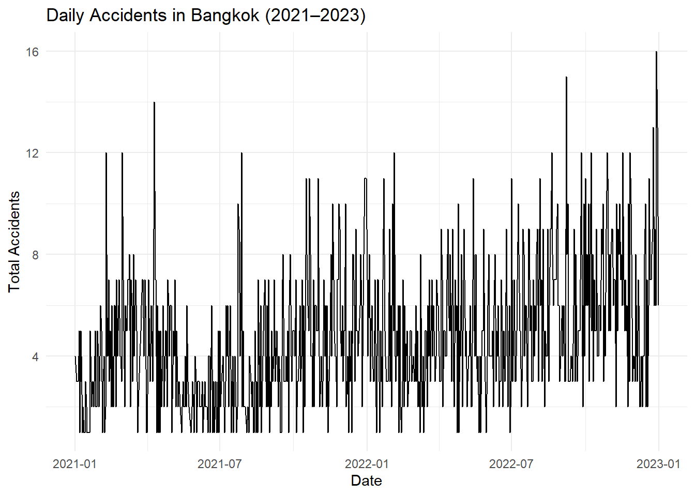
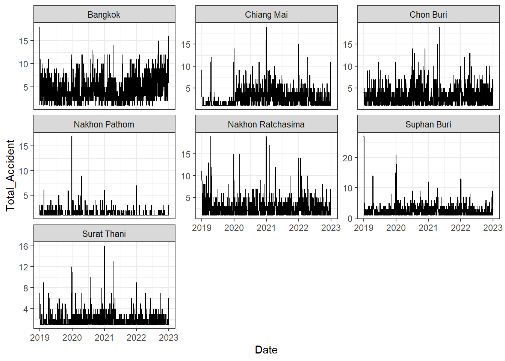
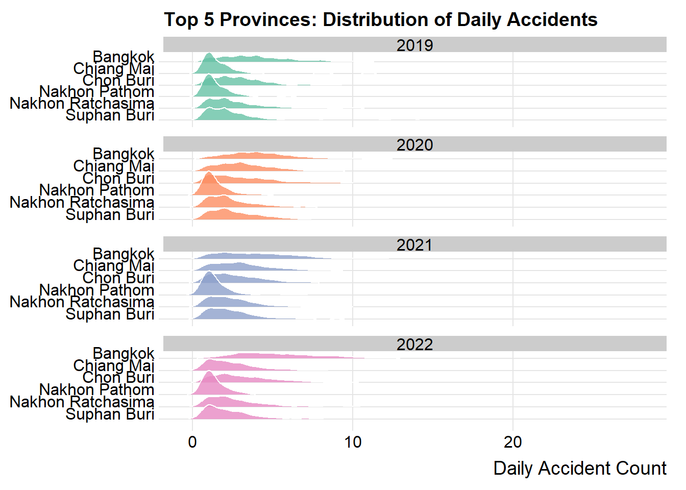
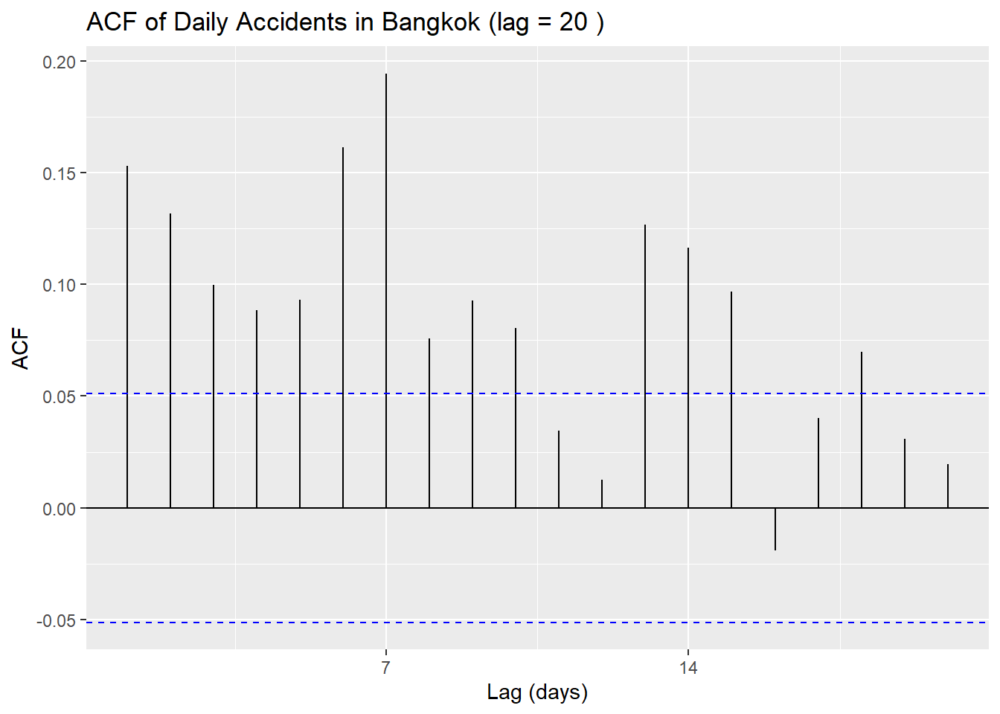
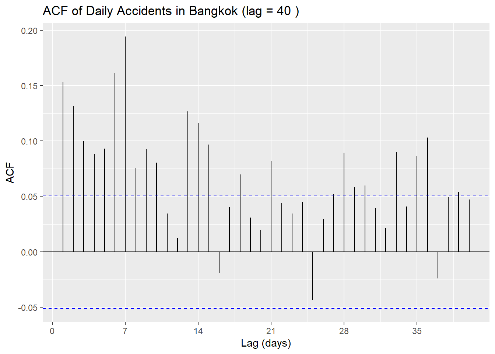
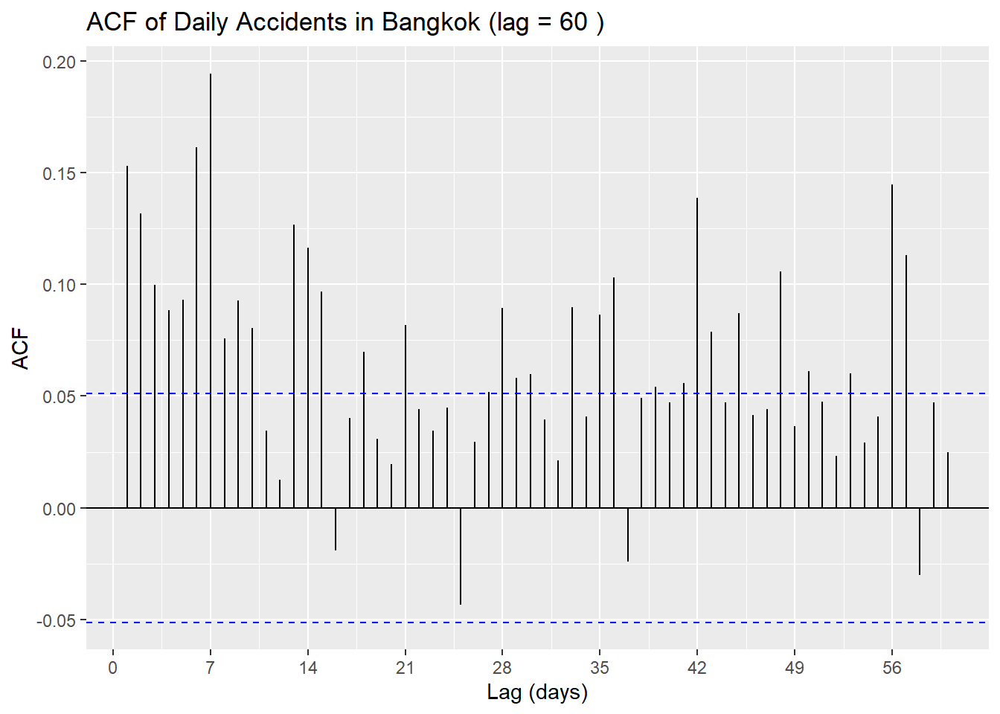
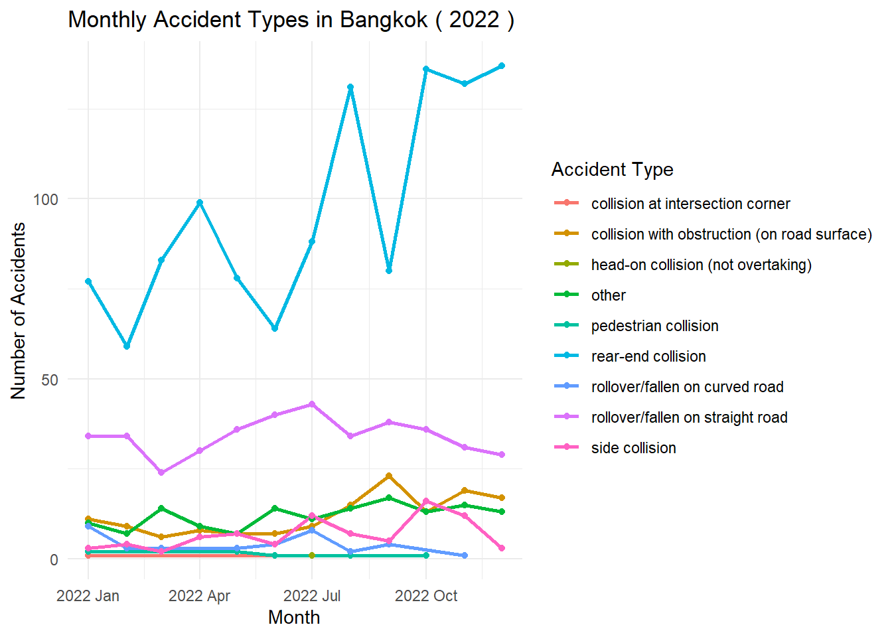
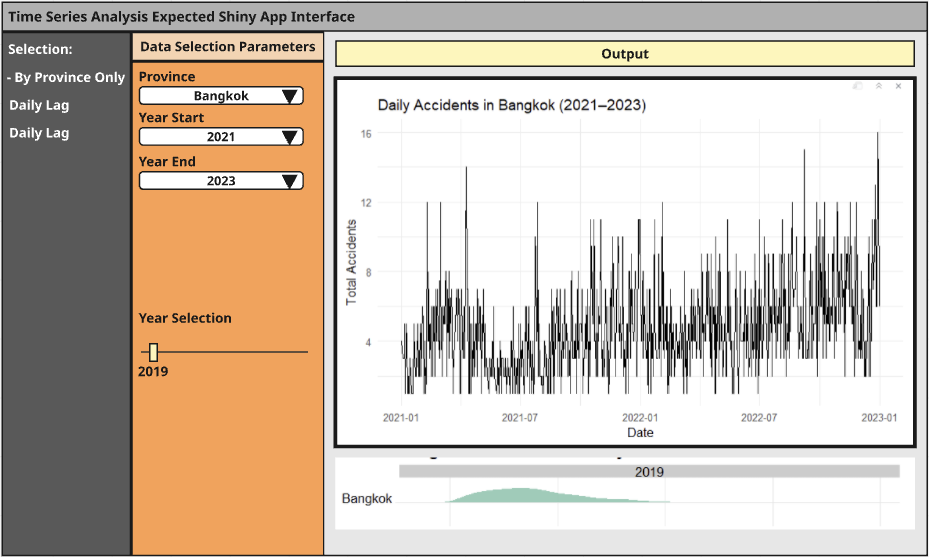
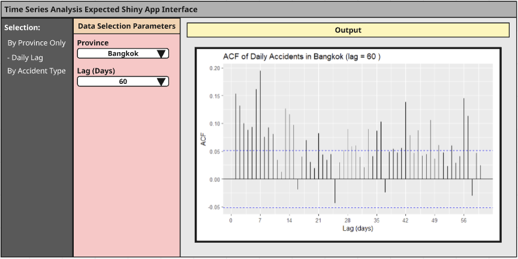
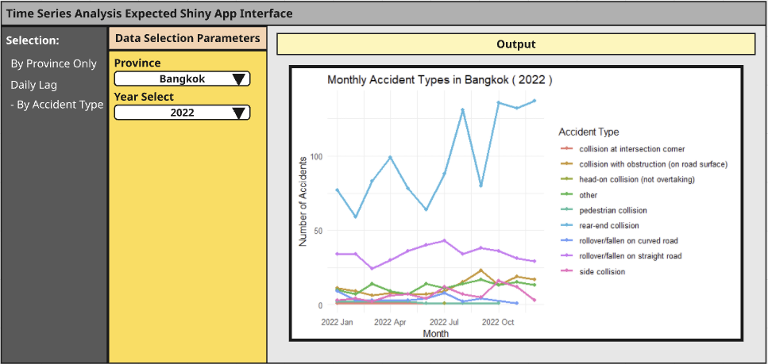

pacman::p_load(tidyverse, lubridate, tsibble, feasts, fable, ggridges)Time Series Analysis
1. Overview
In section will cover Time Series Analysis module of the R Shiny Application.
2. Data Preparation
2.1 Install and launch R packages
The project uses p_load() of pacman package to check if the R packages are installed in the computer.
lubridate provides a collection to functions to parse and wrangle time and date data.
tsibble, feasts, fable and fable.prophet are belong to tidyverts, a family of tidy tools for time series data handling, analysis and forecasting.
tsibble provides a data infrastructure for tidy temporal data with wrangling tools. Adapting the tidy data principles, tsibble is a data- and model-oriented object.
feasts provides a collection of tools for the analysis of time series data. The package name is an acronym comprising of its key features: Feature Extraction And Statistics for Time Series.
fable is used for building and evaluating forecasting models, including ARIMA, exponential smoothing, and more, within a tidy modeling framework.
ggridges is used to create ridge density plots—ideal for visualizing the distribution of values (such as accident counts) across categories like provinces or years.
2.2 Importing the data
First, read_csv() of readr package is used to import visitor_arrivals_by_air.csv file into R environment. The imported file is saved an tibble object called ts_data.
In the code chunk below, ymd() of lubridate package is used to convert data type of incident_datetime field from Character to Date and thus to year-month-day.
thai_data <- read_csv("data/thai_road_accident_2019_2022.csv", show_col_types = FALSE) %>%
mutate(
incident_datetime = parse_date_time(incident_datetime, orders = c("ymd HMS", "ymd HM", "ymd")),
Date = as_date(incident_datetime)
) %>%
filter(!is.na(Date))2.3 Conventional base ts object versus tibble object
daily_province_ts <- thai_data %>%
filter(!is.na(Date), !is.na(province_en)) %>%
count(Date, province_en, name = "Total_Accident") %>%
as_tsibble(index = Date, key = province_en)
daily_province_ts# A tsibble: 45,624 x 3 [1D]
# Key: province_en [78]
Date province_en Total_Accident
<date> <chr> <int>
1 2019-01-01 Amnat Charoen 1
2 2019-01-02 Amnat Charoen 2
3 2019-01-09 Amnat Charoen 1
4 2019-01-15 Amnat Charoen 1
5 2019-01-16 Amnat Charoen 1
6 2019-02-08 Amnat Charoen 2
7 2019-02-11 Amnat Charoen 1
8 2019-02-17 Amnat Charoen 1
9 2019-02-18 Amnat Charoen 1
10 2019-03-26 Amnat Charoen 2
# ℹ 45,614 more rowsThis step transforms the data into a tidy time series format using tsibble, counting daily accidents by province. The output shows that each row now represents the number of accidents on a specific day for a given province, which is ready for time series analysis.
3. Time series with province on traffic accident
In the later graph generation, I would be only selecting a few province to do demonstration here due to large amount of province provided in excel.
daily_province_ts %>%
filter(province_en == "Bangkok", Date >= "2021-01-01") %>%
ggplot(aes(x = Date, y = Total_Accident)) +
geom_line(linewidth = 0.5, color = "black") +
labs(
title = "Daily Accidents in Bangkok (2021–2023)",
x = "Date",
y = "Total Accidents"
) +
theme_minimal()
From this chart, we can see that the daily number of traffic accidents in Bangkok shows a slight upward trend from 2021 to 2023. Although there’s a lot of day-to-day fluctuation, the overall number of accidents appears to be higher in 2023 compared to 2021, indicating a gradual increase. There’s no clear seasonal or periodic pattern—accidents occur quite randomly, but with a general tendency to rise over time.
More graphs to check
top_provinces <- daily_province_ts %>%
group_by(province_en) %>%
summarise(total = sum(Total_Accident)) %>%
slice_max(total, n = 12) %>%
pull(province_en)
daily_province_ts %>%
filter(province_en %in% top_provinces) %>%
ggplot(aes(x = Date, y = Total_Accident)) +
geom_line(linewidth = 0.5) +
facet_wrap(~ province_en, ncol = 3, scales = "free_y") +
theme_bw()
Next we want to show all province but the result is too big so we set “n = 5” to show the top 5 province’s daily accident at this point.
top_provinces <- daily_province_ts %>%
group_by(province_en) %>%
summarise(total = sum(Total_Accident, na.rm = TRUE)) %>%
slice_max(order_by = total, n = 10, with_ties = FALSE) %>%
pull(province_en)
daily_province_ts %>%
filter(province_en %in% top_provinces) %>%
mutate(year = year(Date)) %>%
ggplot(aes(x = Total_Accident, y = reorder(province_en, desc(province_en)), fill = as.factor(year))) +
geom_density_ridges(scale = 2, rel_min_height = 0.01, alpha = 0.8, color = "white") +
facet_wrap(~ year, ncol = 1, scales = "free_y") +
scale_fill_brewer(palette = "Set2") +
theme_ridges() +
labs(
title = "Top 5 Provinces: Distribution of Daily Accidents",
x = "Daily Accident Count",
y = NULL
) +
theme(legend.position = "none")Picking joint bandwidth of 0.396Picking joint bandwidth of 0.425Picking joint bandwidth of 0.459Picking joint bandwidth of 0.447
In the shiny app, we will have a place to show the all the distribution of daily accident for each by selecting province. We will also have a scroll bar to allow the user observe the province’s daily accident based on different year
4. Daily lag relationship for Traffic Accident
lag_values <- c(20, 40, 60)
for (lag_val in lag_values) {
p <- daily_province_ts %>%
filter(province_en == "Bangkok") %>%
fill_gaps() %>%
ACF(Total_Accident, lag_max = lag_val) %>%
autoplot() +
labs(
title = paste("ACF of Daily Accidents in Bangkok (lag =", lag_val, ")"),
x = "Lag (days)",
y = "ACF"
)
print(p)
}


This ACF plot shows the correlation between daily traffic accidents in Bangkok and their past values over a 60-day period. The x-axis shows the lag in days (how many days back), and the y-axis shows the autocorrelation (ACF). Bars that cross the blue dashed lines are statistically significant. We can see mild short-term correlation in the first 10 lags, but overall ACF values are low, indicating weak memory in the data. In the final Shiny app, users will be able to choose the province and lag window themselves. The lag setting controls how far back we look for patterns, and the ACF helps detect trends or seasonality in the data.
5. Monthly Accident type with Province
When conducting time series analysis, we are not only interested in the overall trend of accident counts over time but also in how different types of accidents vary across specific time periods. Focusing on a particular province and year, analyzing how accident types evolve month by month can help identify high-risk periods, uncover recurring patterns, and support decision-making in areas such as policy planning or resource allocation. To achieve this analytical goal, we break the process into three main steps: starting from user input, transforming the data accordingly, and ultimately generating a time series visualization that is both interactive and informative.
Step 1: User selection
In the first step, we simulate user input by assigning values to province_choice and year_choice, which determine the scope of the analysis. These inputs specify the province and year the user wants to explore. In a static R script, we set them manually, but in a Shiny app, these values will be dynamically chosen by the user via dropdown menus or other UI elements. These inputs form the foundation for filtering the dataset in the following steps.
province_choice <- "Bangkok"
year_choice <- 2022Step 2: Data Preparation
The second step involves preparing the dataset for time series analysis. We first create a Month variable that captures year and month using the yearmonth() function, and extract the year for filtering purposes. Based on the selected province and year, we filter the dataset and then group the data by month and accident type. For each combination, we calculate the total number of accidents. This gives us a monthly breakdown of accident types within the chosen province and year. The result is then converted into a tsibble object, a tidy time series structure that supports downstream analysis and visualization. In a Shiny application, this step would typically be placed inside a reactive() expression that updates automatically based on user input.
acc_ts <- thai_data %>%
mutate(Month = yearmonth(incident_datetime),
year = year(incident_datetime)) %>%
filter(province_en == province_choice, year == year_choice) %>%
group_by(Month, accident_type) %>%
summarise(Total = n(), .groups = "drop") %>%
as_tsibble(index = Month, key = accident_type)Step 3: Visualize
In the third step, we visualize the processed data by plotting a time series graph that shows how each accident type changes over the months. The x-axis represents the months, the y-axis shows the number of accidents, and different lines (distinguished by color) represent different accident types. This visualization allows users to clearly observe trends, seasonal shifts, or sudden spikes in specific types of accidents. In a Shiny app, this plot would be rendered inside a renderPlot() function, updating dynamically whenever the user changes the selected province or year. The resulting chart enhances interpretability and provides valuable insights into accident dynamics over time.
ggplot(acc_ts, aes(x = Month, y = Total, color = accident_type)) +
geom_line(linewidth = 1) +
geom_point() +
labs(
title = paste("Monthly Accident Types in", province_choice, "(", year_choice, ")"),
x = "Month",
y = "Number of Accidents",
color = "Accident Type"
) +
theme_minimal()
This chart shows the monthly number of different accident types in Bangkok for the year 2022. It reveals that rear-end collisions were the most common throughout the year, with noticeable spikes around mid and late 2022. Rollover/fallen on straight road and side collisions also occurred frequently but with less intensity. Other accident types remained relatively low and stable across the months, indicating a clear dominance of rear-end collisions in Bangkok’s traffic accidents during this period.
6. Expected Shiny Application Model
By Province Only

Daily Lag

By Accident Type
